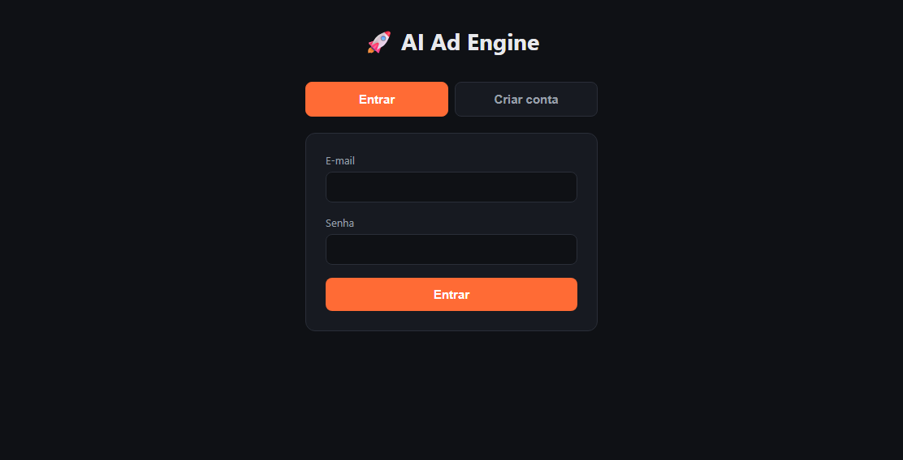

AI Ad Engine
Gerador de anúncios com IA para marketplaces: recebe os dados de um produto e a plataforma de venda (Mercado Livre, Shopee ou Amazon) e devolve um anúncio estruturado, validando a resposta do modelo antes de entregá-la.

Tela de entrada da aplicação publicada.
O problema
Escrever textos de anúncio na mão é demorado e varia de pessoa para pessoa. Modelos de linguagem ajudam, mas as respostas são imprevisíveis: muitas vêm com o JSON quebrado ou fora do formato esperado.
O projeto resolve isso tratando a resposta do modelo como algo que precisa ser verificado, e não como algo confiável por padrão.
Como funciona
- Entrada: nome, preço, categoria, material e diferenciais do produto, mais a plataforma de venda.
- Montagem do prompt: um prompt estruturado, pensado para gerar uma saída previsível.
- Chamada ao modelo: a API de inferência do HuggingFace, com novas tentativas automáticas quando a resposta falha.
- Extração do JSON: localiza o JSON dentro do texto devolvido pelo modelo.
- Validação: confere se o anúncio tem todos os campos esperados antes de aceitá-lo.
- Saída formatada: título, bullets, descrição, SEO oculto, texto de frete grátis e sugestão de upsell, guardados no histórico do usuário.
Do script ao produto
A primeira versão era uma ferramenta de linha de comando. Depois evoluiu para uma aplicação web:
- API em Express com TypeScript;
- persistência em SQLite;
- contas com e-mail e senha, sessão por cookie httpOnly e dados isolados por usuário;
- interface simples em HTML, CSS e JavaScript;
- publicação na nuvem (Railway).
O que aprendi
O modelo gratuito que usei devolvia JSON malformado ou ausente em uma parte relevante das chamadas, algo em torno de 30% a 50% nos meus testes. Confiar numa única resposta não funcionava. A solução foi combinar novas tentativas com uma camada de validação, para que só respostas corretas cheguem ao usuário.
Tecnologias
Quer ver o código?
O repositório é privado por enquanto. Se quiser ver o código ou uma demonstração, é só me chamar.
Falar com o Juan